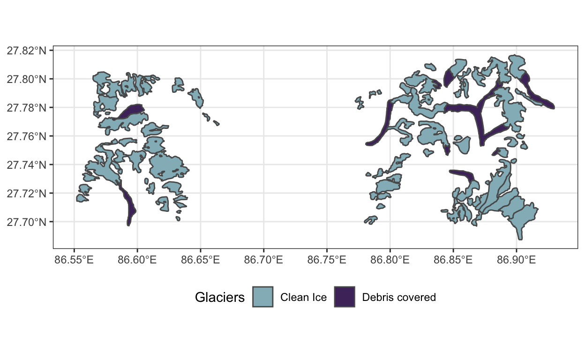
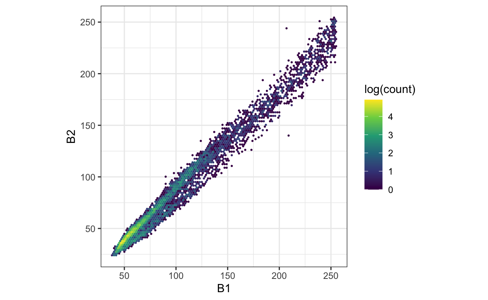

An initial look at the raw data, with an eye towards preprocessing.
In this notebook, we take a first look at the glacier data. Well download the raw annotations and images, using visualization to gain familiarity with the structure of the problem.
Well be using the R packages below. dplyr, ggplot2, and tidyr are part of Rs tidy data ecosystem. gdalutils, raster, and sf are packages for general spatial data manipulation. RStoolbox gives useful functions for spatial data visualization specifically.
params block in the header of this rmarkdown file.data_dir <- params$data_dir
dir.create(params$data_dir, recursive = TRUE)
x_paths <- dir(data_dir, "*tiff", full.names = TRUE)
vrt_path <- file.path(data_dir, "region.vrt")
gdalbuildvrt(x_paths, vrt_path, ot="float64")
NULLglaciers.geojson file demarcates the boundaries for two types of glaciers that are common in the Hindu Kush Himalayas region. The full dataset gives coordinates for glaciers across the whole region, which spans many countries, making it a bit overwhelming to visualize. Instead, lets pick one of 63 basins in the region and visualize its glacier boundaries.Simple feature collection with 6 features and 20 fields
geometry type: MULTIPOLYGON
dimension: XY
bbox: xmin: 86.53224 ymin: 27.90988 xmax: 86.89739 ymax: 28.06725
geographic CRS: WGS 84
# A tibble: 6 x 21
ID Longitude Latitude GLIMS_ID Glaciers Elv_min Elv_mean Elv_max
<int> <dbl> <dbl> <chr> <chr> <int> <int> <int>
1 75 86.6 28.0 G086626 Debris 4938 5200 5684
2 106 86.7 28.0 G086700 Debris 4691 5053 5996
3 131 86.8 28.0 G086799 Debris 4982 5053 5299
4 60 86.6 28.0 G086565 Debris 4849 4970 5192
5 148 86.9 27.9 G086866 Debris 4970 5232 5582
6 149 86.9 27.9 G086889 Debris 4979 5098 5288
# with 13 more variables: Slope_min <int>, Slope_mean <int>,
# Slope_max <int>, Aspect <int>, Area_SqKm <dbl>, Thickness <dbl>,
# Reserve <dbl>, Basin <chr>, M_Basin <chr>, Region <chr>,
# Country <chr>, Sub_basin <chr>, geometry <MULTIPOLYGON []>ggplot(y, aes(fill = Glaciers)) +
geom_sf() +
scale_fill_manual(values = c("#93b9c3", "#4e326a")) +
theme(legend.position = "bottom")

From a technical perspective, there are two points worth noting. First, we were able to use dplyrs filter function on these glaciers, as if they were stored in an ordinary data frame (theyre in fact stored in a spatial data frame). Being able to use concepts of tidy data manipulation in spatial problems can make our lives much easier. Second, notice that were using tm_shape from the tmap package this package makes much nicer spatial data visualizations than simply calling plot() from base R. It also implements a grammar of graphics for spatial data, allowing us to layer on different visual encodings in a flexible way.
Next, lets visualize the satellite imagery in that region. The satellite images are not like ordinary images from a camera they have many sensors. In our case, each pixel is associated with 15 measurements. For example, the block below first plots the RGB colors associated with the region before showing a composite that turns all the glaciers blue.
Notice the similarities with the outlines in the glaciers.geojson file. We can more or less distinguish the clean ice and debris-covered glaciers from the rest of the image. Looking a bit more carefully, though, we realize that there are lots of areas that fall into the bluish regions but which arent labeled as clean ice glacier. We might hope that some of the other channels make the difference more visible, but it seems like there might be some danger of false positives. Also, it seems like the debris-covered glaciers are only a subtley different color from the background their tendril-like shape is a much better visual clue.
Weve managed to use geom_sf and ggRGB to avoid having to convert the raw data to standard R data frames. There are some situations, however, when it can be useful to make that conversion. The code below provides an example that extracts the slope channel from the satellite image and visualizes it using standard ggplot2. It seems like the debris-covered glaciers are relatively flat.
slope <- subset(x, 15) %>%
as.data.frame(xy = TRUE)
ggplot(slope, aes(x = x, y = y)) +
geom_raster(aes(fill = slope)) +
scale_fill_gradient(low = "white", high = "black") +
coord_fixed() +
scale_x_continuous(expand = c(0, 0)) + scale_y_continuous(expand = c(0, 0))
rm(slope) # save space
sample_ix <- sample(nrow(x), 100)
x_df <- x[sample_ix, sample_ix, ] %>% # subset pixels
as.data.frame()
x_longer <- x_df %>%
pivot_longer(cols = everything())
ggplot(x_longer) +
geom_histogram(aes(x = value)) +
facet_wrap(~ name, scale = "free_x")
geom_hex, because otherwise the points overlap too much. This visualization makes it clear how the two B6 channels are nearly copies of one another, so we can safely drop one of them from our visualization. For reference, we also plot the first two channels, B1 and B2, against one another.ggplot(x_df, aes(x = B6_VCID_1, y = B6_VCID_2, fill = log(..count..))) +
geom_hex(binwidth = 2) +
scale_fill_viridis_c() +
coord_fixed()
ggplot(x_df %>% filter(B1 != 255, B2 != 255), aes(x = B1, y = B2, fill = log(..count..))) +
geom_hex(binwidth = 2) +
scale_fill_viridis_c() +
coord_fixed()
